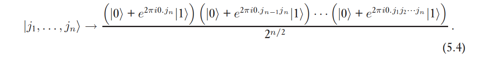
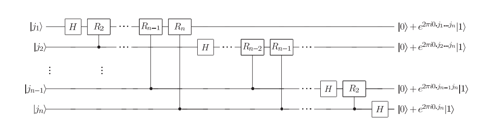
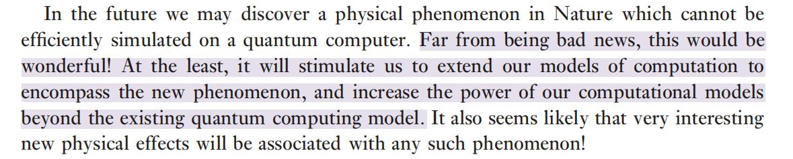
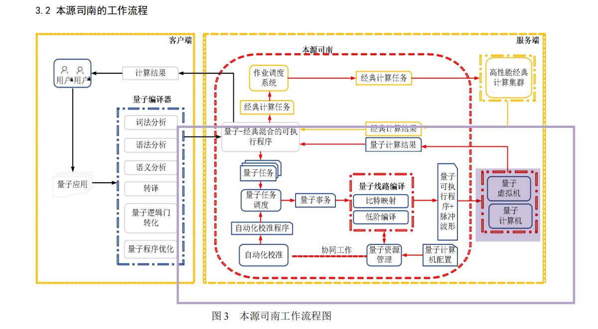
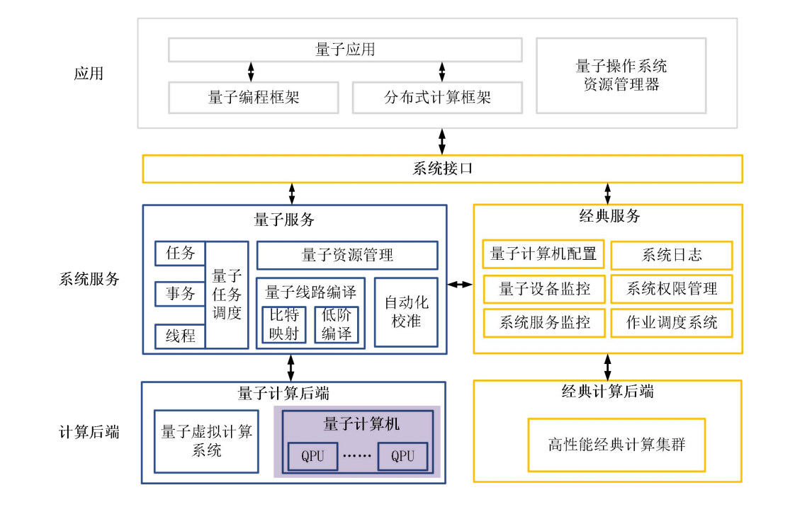

量子计算概述
这是一篇没什么技术含量的概述（应该不会有太多公式）。之前不了解quantum computation的朋友可放心食用。
狭义的量子计算只是指的是用这种技术进行计算并得到想要的结果，这种意义下，量子计算代替的是传统计算机中由电路、逻辑门等组成的东西。而量子技术能做到的不止计算，还有量子信息传输（例如超密编码、量子隐形传态等等，也许这些属于量子信息，恕我了解的不够多）。
本文要讨论的是狭义的量子计算。
什么是计算
计算机科学发展到如今，感觉已经很难用一个定义去涵盖所有那些奇形怪状的计算模型了。例如：
- QCQI(参考文献1) 3.3节举了一个用DNA复制进行“计算”，解决寻找哈密顿圈问题的例子。
- 量子计算机
- 各种异构处理器
我们可以把计算抽象为图灵机，但是我总觉得这太抽象，不能概括各种具体计算模型的特征，感觉上和别的计算模型毫无关系；也可以把计算具体为我们计组里面学的、由电路搭成的计算机，但是这又没能包含太多其他计算模型。
我宁愿把计算机定义为一种人造的、能够获取输入并且按照人的意愿进行一系列作用并给出输出的机器。
计算机科学传统上不受物理定律的限制，但是计算机的实现取决于物理定律，物理定律决定了计算机科学家们能够使用哪些东西。计算机科学理论可以脱离物理而存在，而其应用会受到物理定律的限制。
我们要讲的量子计算机就是一种不同于传统计算模型的模型。
量子计算是如何实现的
量子计算的基本要求有
- 稳定的表示量子信息
- 完成通用的酉变换
- 制备初态
- 测量得到输出结果
我们把用来表示量子信息的东西抽象为量子比特，作用在量子比特(qbit)上导致状态改变的东西我们抽象为酉变换，一个或多个qbit的量子态可以表示为某个基上的一个向量，测量就是由量子态到经典的过程。由此一来，可以用向量表示状态、矩阵的乘积表示门，可以通过电路图来表示量子电路，例如：
\[ X = \left[ \begin{matrix} 0&1\\1&0 \end{matrix} \right] \]
表示非门，因为：
\[ X|0\rangle =\left[ \begin{matrix} 0&1\\1&0 \end{matrix} \right] \left[ \begin{matrix} 1\\0 \end{matrix} \right]=\left[ \begin{matrix} 0\\1 \end{matrix} \right] = |1\rangle \]
当然也可以由量子门构成与门、或门等，但是这是是证明了量子计算的可行性，量子计算的强大之处不在于此。
总而言之，量子计算的过程就是由量子比特和作用在qbit上的酉矩阵组成的，最终我们由测量得到计算结果。
量子计算的优越性
这里想举个例子来说明。
QFT（量子傅里叶变换）及其应用
（以下内容来自参考文献1 chapter5）
傅里叶变换的公式为
\[ |j\rangle \rightarrow \frac 1 {\sqrt N} \sum_{k = 1}^{N-1} e^{2\pi i j k /N} |k\rangle \]
可以等价转化为（\(j_1,...j_n\in \{0,1\}\)是 j 的二进制表示

如果我们要对于\(0,..., 2^n-1\)的每个数字计算它的变换结果，经典算法的复杂度为\(O(n2^n)\)，而如果使用量子算法，我们可以先制备一个叠加态，一次计算这\(2^n\)个态的结果，复杂度为\(O(n^2)\)。

一般科普文章可能就写到这里了，但是光是计算出来还不行，测量也是量子算法中要考虑的一个重要问题。我们计算出来了，怎么测量呢？因为随机性，我们其实不能直接测量得到我们想要的结果，因此，单独一个量子傅里叶变换是没有用的。
那么这个算法有什么用呢？
一个事实是：大部分量子电路都是可逆的，所以，逆傅里叶变换也是可以实现的，我们可以利用逆傅里叶变换做什么呢？可以把蕴含在相位中的数字（上图右边的\(e^{2\pi i 0.j_1...}\)这类数字）转换成用二进制表示的形式（\(|j_1j_1...j_n\rangle\)），然后就可以测量了！
利用这个算法，我们可以求一个酉算子的特征值，可以求群中某个元素的阶，可以求周期函数的周期，可以求一个大整数的因子......
更具体的描述请参考（写的比较简略，可能需要一些基础才能读懂？）：
QCQI-exercise/5.md at master · Banana889/QCQI-exercise (github.com)
总结
量子傅里叶变换的应用体现了以下基本思想：
制造并行、计算、提取信息
QFT是一个比较容易理解而且有名的算法，但是并不是所有的量子算法都是这样。例如Gover算法（量子搜索算法）就是通过逐次调整直到测量出我们想要的结果的概率变大。
总的来说，量子算法就是利用量子态不同于经典的特征进行计算。我们想要利用的只是体现量子特性的这一小部分，其他部分的计算没有必要使用量子算法，比如因子分解中求出一个可能的因子后验证它是不是因子这个任务就完全可以交给经典计算机去完成。
物理实现
以上的讨论都是抽象的，qbit到底是什么呢？酉算子到底是什么呢？
这部分在参考文献1的第七章讨论了，但是我看不懂。
量子计算机可以基于很多种物理实体实现，可以用原子能级、自旋、光子频率实现qbit，可以用激光、光学元件等东西来实现酉变换......
这句话很有意思（人类对强大力量的原始渴望）：

支持量子计算的操作系统
这一节的标题不是“量子操作系统”而是“支持量子计算的操作系统”，是因为我觉得前者太具有误导性了。
在了解之前我以为量子计算机可能是和经典计算机一样的，完全由量子“电路”组成的计算机，毕竟“量子计算机”这个名字起的太大了。但是按照我个人对于量子计算的理解，它其实更适合作为一个计算机的一个处理器，像类似于 GPU 或者别的什么东西的一个加速器。
经典计算机已经非常成熟，在普通的计算方面无论是速度还是可靠性都比量子计算机强很多（就像拿一个刚出生的婴儿和一个正值壮年的人相比），我们没有必要为了量子而量子，而是应该在量子计算适合的领域让它充分发挥作用。
因此，量子操作系统的架构主要就是在经典的基础上加上了处理量子任务的部分，也就是下图中大紫色方框框起来的部分。

下面这张图就更清楚了，只有紫色高亮部分才是由量子处理器做的事情，其他部分都是由经典做的，包括任务调度、资源管理、编译等。

采用这种架构的另一个很重要的理由是我们现有的大多数量子算法都是 量子-经典混合的，并且我感觉必须使用量子处理器才能做的只有其中的一小部分（但是却十分重要，并且是算法的关键）。比如因子分解算法中只有求阶的部分用到了量子计算的特性，大的框架是经典的，这给我的感觉是量子计算机是我们可以调用的一个具有某些特定能力的黑盒。
量子操作系统相比于一般的操作系统新增的的这部分做的就是进行资源管理、调度任务、分配物理量子bit等这些工作，然后把编译好的程序发送给QPU去处理。上面说的这些都是由经典程序做的。
想到这学期报的一门课是《智能计算体系结构》，是教我们做一个模拟神经网络的加速器（硬件）。人们为了提高某些特殊计算的速度，直接从硬件入手比改进软件可能是更为高效的一种手段。也许未来的计算机会加上更多异构处理器，而软件设计会面临 如何尽最大可能利用这些硬件资源 的课题......
上面这个图的“量子计算后端”部分还有一个叫做“量子虚拟计算系统”的东西，猜测是用经典计算机模拟量子计算机。
参考文献：
[1] Michael A. Nielsen, Isaac L. Chuang - Quantum Computation and Quantum Information
目前主要学习了这本书的1,3,4-7章
[2] 第1章 Quick Start — QRunes_tutorial documentation (qrunes-tutorial.readthedocs.io)
[3] 孔伟成,王俊超,韩永健,吴玉椿,张 昱,窦猛汉,方 圆,郭国平.(2021).本源司南：高效利用量子资源的量子操作系统. 链接:ChinaXiv.org 中国科学院科技论文预发布平台